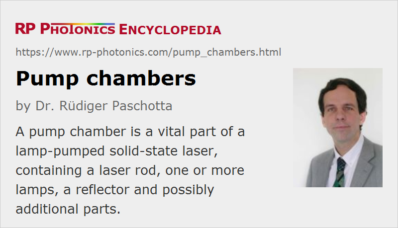

Pump Chambers
Definition: a part of a lamp-pumped solid-state laser, containing a laser rod, one or more lamps, reflectors, a cooling arrangement and possibly other parts
German: Pumpkammern
Categories: photonic devices, lasers
How to cite the article; suggest additional literature
Author: Dr. Rüdiger Paschotta
A pump chamber is an assembly around the laser rod (or slab) within the laser resonator of a lamp-pumped laser or within a laser amplifier setup. Besides the laser rod, it typically contains the following:
- There are one or more lamps – flash lamps in case of pulse lasers or arc lamps for continuous-wave operation. The pump chamber contains electrical connections for the high voltage required to drive the lamps.
- One or more reflecting surfaces are used to direct much of the generated pump light into the laser rod. An often used configuration of single-lamp chambers contains a reflector with elliptical cross section, where the laser rod and the lamp are each placed around one of the focal points (see Figure 1). (When two lamps are used, the reflector cross section may be composed of two partial ellipses.)
- The laser rod may be placed inside a filter glass tube which absorbs and thus attenuates spectral components of the light which may be detrimental for the laser rod. The glass tube may also shield the laser crystal against the cooling water, i.e., act as a flow tube.
- There is usually a cooling arrangement, which is often based on cooling water. The housing of the pump chamber (made e.g. of anodized aluminum or stainless steel) has fittings for the water inlet and outlet, or sometimes multiple such fittings.
In case of a slab laser, one often uses one lamp of each side of the slab. instead of a filter tube, one can use flat filter windows between the slab and the lamps.
For essentially all lamp-pumped lasers, the technique of side pumping is used, since the diffuse nature of the lamp emission is not suitable for end pumping.
For a simple laser, the pump chamber needs to be supplemented only with two laser mirrors for forming a laser resonator. Additional optical components may be placed within the laser resonator – for example, additional mirrors, a Brewster plate for enforcing linear polarization, and a Q switch for short pulse operation.
There are also laser pump modules containing laser diodes instead of lamps; those are usually not called laser pump chambers, since they do not require a reflecting chamber for directing the pump light. However, the term sometimes appears in the context of slab lasers and thin-disk lasers, where multiple pump reflections are used.
Further Details of Laser Pump Chambers
Laser Gain Media
Different laser media are used in laser pump chambers. A common choice is Nd:YAG, typically for emission at 1064 nm, but one also various other types of laser crystals for obtaining other output wavelengths (e.g. Nd:YLF for 1047 nm, Er:YAG for 1.6 μm or 2.94 μm or Ho:YAG for 2.1 μm) and erbium- or neodymium-doped glass rods for broadband high energy amplifiers.
Rod Dimensions and Doping Concentration
A thicker and/or more highly doped laser rod can of course more efficiently absorb the pump radiation. On the other hand, efficient energy extraction combined with high laser beam quality is tentatively more difficult with thicker rods, and high doping concentrations increase the tendency for power losses through upconversion phenomena, particularly in pulsed lasers. The optimum choice of rod diameter results from a compromise between different aspects which depends on the detailed circumstances. Typically, rods with diameters of the order of 5 to 10 mm and moderate doping concentration are used.
Long pump chambers for the use of correspondingly long rods and lamps are suitable for higher laser powers or energies. However, challenges related to thermal lensing, for example, are getting stronger at high power levels. Typically, the rod length is between 50 and 200 mm.
Pump chambers often allow the use of rods which are somewhat longer than the required minimum length. The outer parts of the laser rod may then remain unpumped, which however does not significantly reduce the laser efficiency in case of a four-level laser medium such as Nd:YAG, because those do not exhibit reabsorption of laser light. The advantages of using a somewhat longer rod can be that it is easier to insert, and that there is some reserve for later shortening e.g. if a damaged end face needs to be polished again.
Designs with Multiple Lamps or Rods
The use of multiple lamps in a pump chamber allows not only the generation of higher pulse energies, but can also lead to a more symmetric distribution of pump light. Therefore, dual-lamp designs with lamps on opposite sides of the rod are common.
In some cases, a pump chamber contains multiple laser rods. (The laser light may subsequently be sent through different rods.) Using multi-rod chambers can provide increased output power combined with an increased conversion efficiency, since the absorption efficiency can be enhanced.
Materials for Reflectors
Different materials can be used for pump light reflectors. Metals like gold and silver (used as thin coatings, e.g. gold on brass or silver on nickel-plated aluminum) provide high reflectivities over wide spectral ranges. The specular reflection of metal surfaces makes it necessary to optimize the geometry for good power transfer efficiency and sufficient uniformity of the pump intensity. (Non-uniform pump profiles can lead to increased problems e.g. with thermal lensing and concerning beam pointing fluctuations.)
There are also materials providing diffuse scattering rather than specular reflection, for example white ceramics, certain polymer materials or a packed powder (e.g. barium sulfate). Diffuse scattering can provide a more uniform pump intensity distribution in the rod, but is tentatively less efficient in terms of power transfer, because it may take multiple scattering events for light to get to the laser rod. On the other hand, ceramic diffuse reflectors are quite durable, while metallic surfaces may tarnish over the time (particularly when exposed to cooling water, which may not be perfectly clean) and may then have to be repolished.
Particularly when using a laser rod with low absorption (e.g. due to a small diameter), low absorption of the scattering materials is important for a high power conversion efficiency. The geometric shape of the reflecting (actually scattering) surface is less important; one can use, for example, a ceramic with cuboid or oval shape of the cavity containing rod and lamps. Often, one uses close-coupled configurations, i.e., with a small distance between lamp and laser rod.
Filter Glass
As mentioned above, the filter glass tube may be used for protecting the laser rod against detrimental spectral components of the lamp light. Particularly, ultraviolet light is often removed which could cause crystal defects and thus a degrading optical transparency (solarization). Also, some spectral components are not useful for the laser process and only lead to additional heating of the rod, so that their removal in the filter glass can be beneficial. In some cases, the absorbed light is even converted to fluorescent light at longer wavelengths which is useful for the laser process. For Nd:YAG lasers, silicate filter glasses doped with cerium (Ce) and samarium (Sm) are common.
Water Flow
The flow of the coolant (typically water) must obviously be sufficient to remove the excess heat while avoiding excessive temperatures. It can also be advantageous to optimize the coolant flow such that the temperature profile around the laser rod is quite uniform, so that astigmatic thermal lensing and problems with beam pointing fluctuations are minimized.
Most pump chambers are so-called wet chambers, where the lamp(s) and rod(s) are in direct contact with the cooling water. However, there are also dry designs, where those parts are separated from the cooling water, usually by glass tubes (flow tubes). The latter approach may have practical advantages, but particularly the cooling of the laser rod is then less effective.
Depending on details of the construction (e.g. used materials), there may be different requirements on the purity of the cooling water. Operating a pump chamber outside such specifications for longer while may lead to serious degradation or defects, e.g. due to corrosion.
An important aspect of the quality of the construction of a pump chamber is the safe avoidance of cooling water leaks, which otherwise could lead to electrical problems (even hazards) and/or the contamination of optical surfaces.
OEM Pump Chambers
Pump chambers may be sold with or without the corresponding laser rod and lamps. They are often used as OEM parts, so that a manufacturer can produce lamp-pumped lasers without fabricating pump chambers himself.
Suppliers
The RP Photonics Buyer's Guide contains 1 supplier for pump chambers.
Questions and Comments from Users
Here you can submit questions and comments. As far as they get accepted by the author, they will appear above this paragraph together with the author’s answer. The author will decide on acceptance based on certain criteria. Essentially, the issue must be of sufficiently broad interest.
Please do not enter personal data here; we would otherwise delete it soon. (See also our privacy declaration.) If you wish to receive personal feedback or consultancy from the author, please contact him e.g. via e-mail.
By submitting the information, you give your consent to the potential publication of your inputs on our website according to our rules. (If you later retract your consent, we will delete those inputs.) As your inputs are first reviewed by the author, they may be published with some delay.
See also: lamp-pumped lasers, laser heads, side pumping, pump absorption, solid-state lasers
and other articles in the categories photonic devices, lasers
|  |
If you like this page, please share the link with your friends and colleagues, e.g. via social media:
These sharing buttons are implemented in a privacy-friendly way!